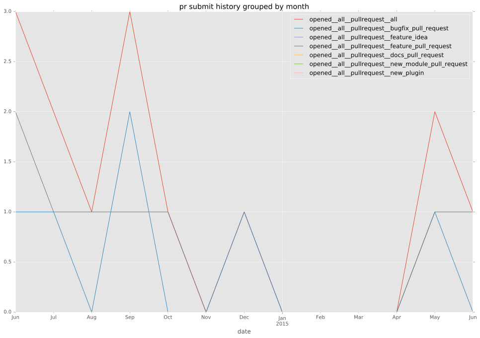
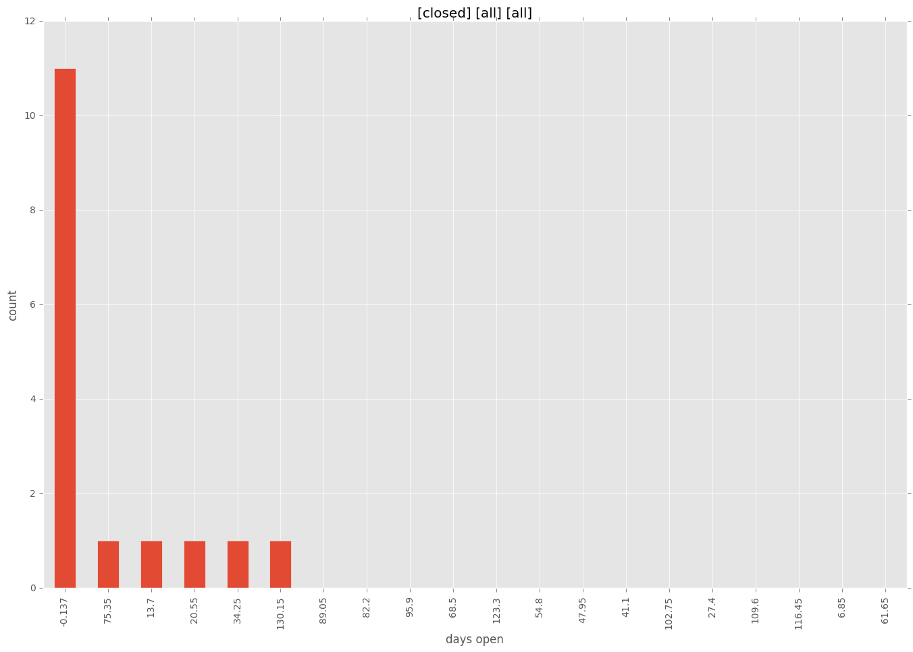

authors
- sivel
maintainers
- sivel
contributors
- sivel : 60 commits
- Hypermanzer : 6 commits
- jamiehannaford : 5 commits
- abadger : 2 commits
total issue counts
feature pull request: 7
bugfix pull request: 7
pullrequest: 14
issue: 2
bug report: 2
issue history
pullrequest history


days open by issue type
bugfix pull request
count: 12
std: 15.7833341333
min: 0
max: 41
median: 0.0
mean: 7.25
all
count: 25
std: 39.5300729403
min: 0
max: 137
median: 2.0
mean: 20.72
pullrequest
count: 0
std: nan
min: nan
max: nan
median: nan
mean: nan
feature pull request
count: 11
std: 53.2373757976
min: 0
max: 137
median: 20.0
mean: 38.7272727273
issue
count: 0
std: nan
min: nan
max: nan
median: nan
mean: nan
bug report
count: 2
std: 3.53553390593
min: 0
max: 5
median: 2.5
mean: 2.5
closures grouped by total days open
